Uzumaki Naruto 🍃
The Seventh Hokage
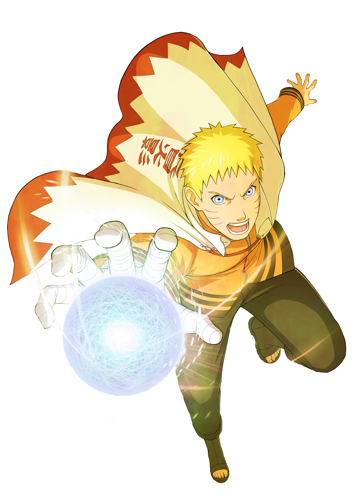
Seventh Hokage of Konoha, he is the hero of the Fourth Great Ninja War. With his strength, determination, and the power of the Nine Tails, he protects his village and symbolizes hope for future generations.
AboutHidden Villages
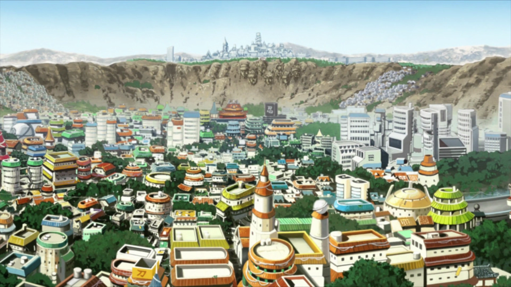
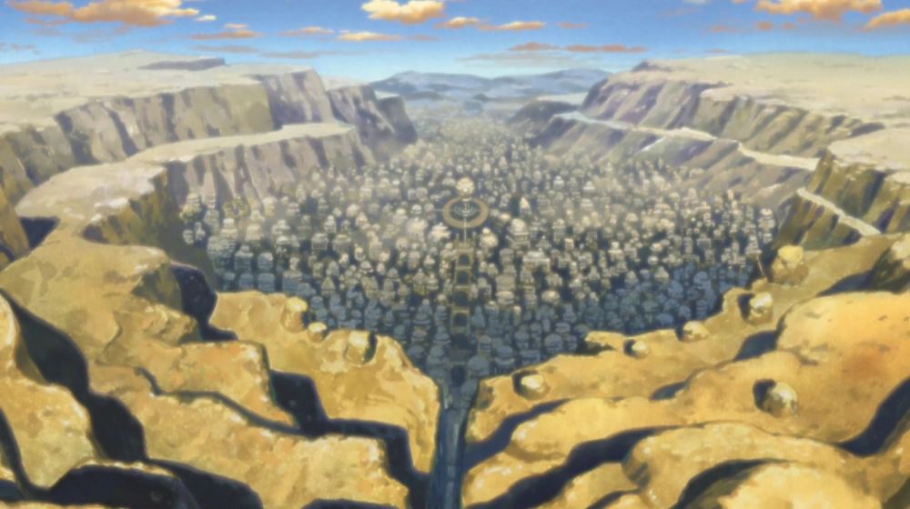
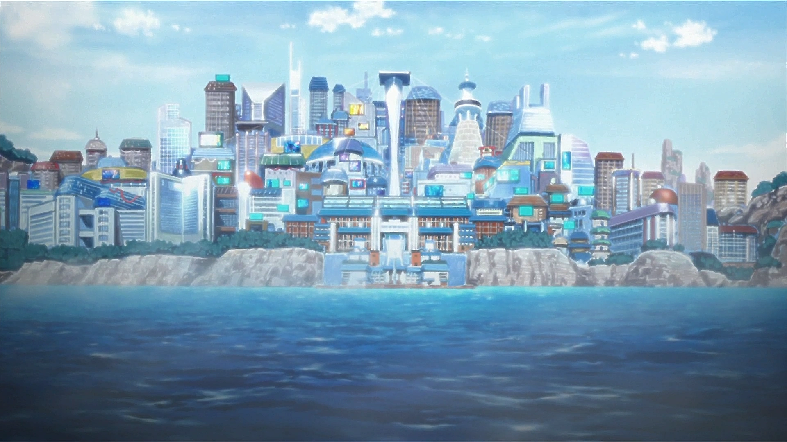
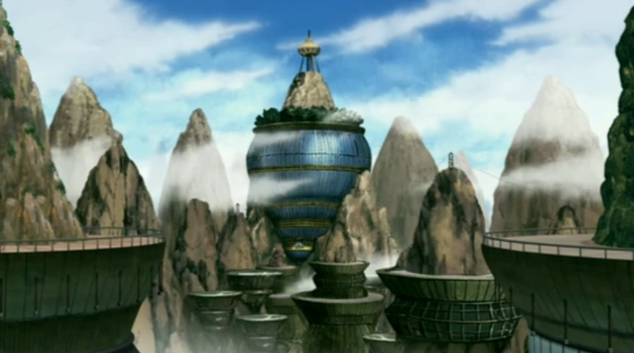
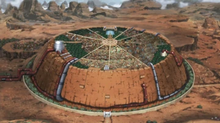
Five Kages (1st gen)
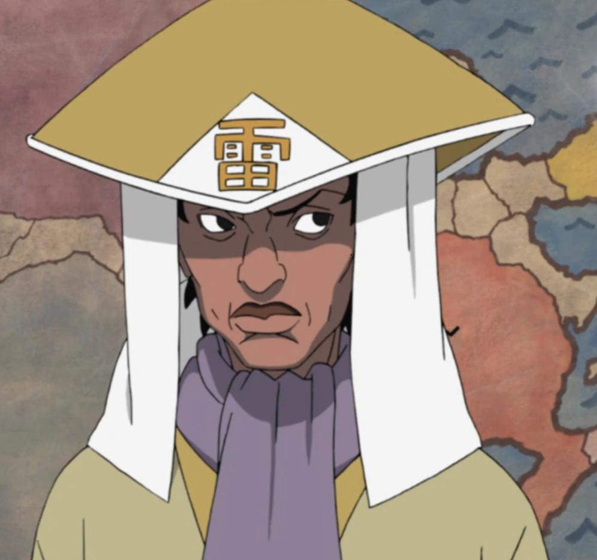
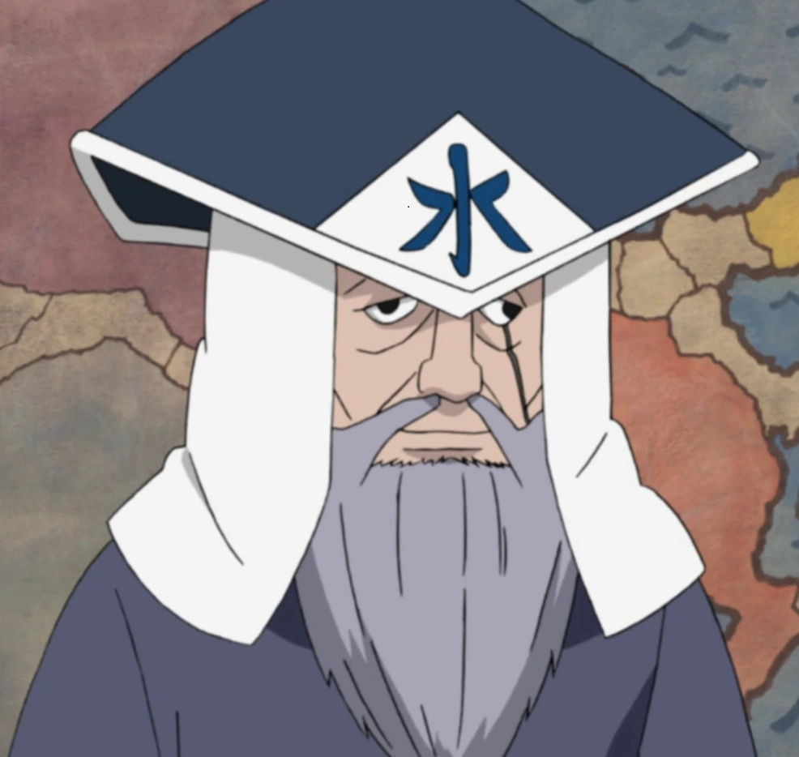
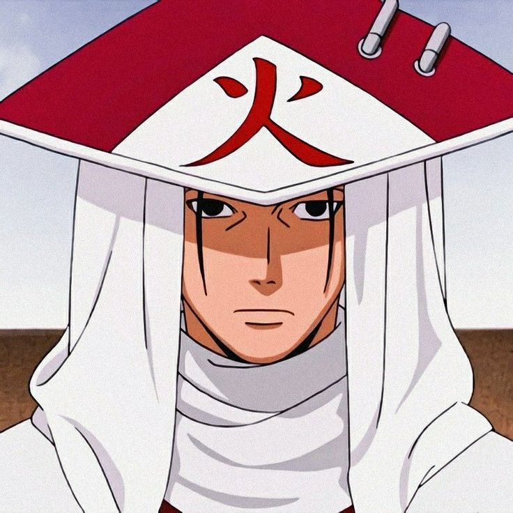
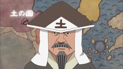
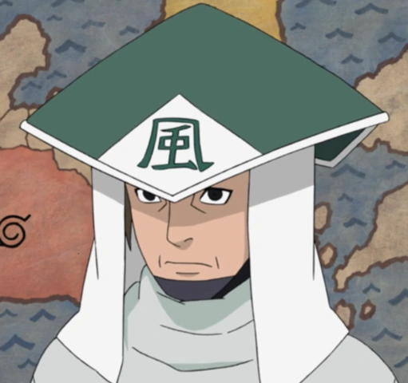